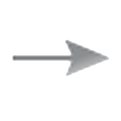

图型版
文字版
工具集
保存
编辑
删除
选择
 动作
状态
状态
动作
新建动作
序号
初始状态
动作
结束状态
删除
×
新建动作
动作名称：
初始状态：
不选则为开始状态
结束状态：
动作角色：
新建状态
×
新建状态
状态名称：
×
新建动作
动作名称：
开始状态：
结束状态：
动作角色：
新建角色
高级配置
是否允许指派多人：
是
否
×
新建角色
角色名称：
×
编辑角色用户
新建用户
序号
用户名
具备角色
 保存
保存 编辑
编辑 选择
选择